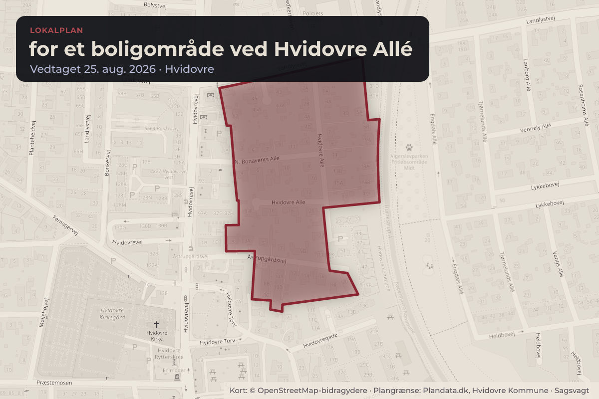
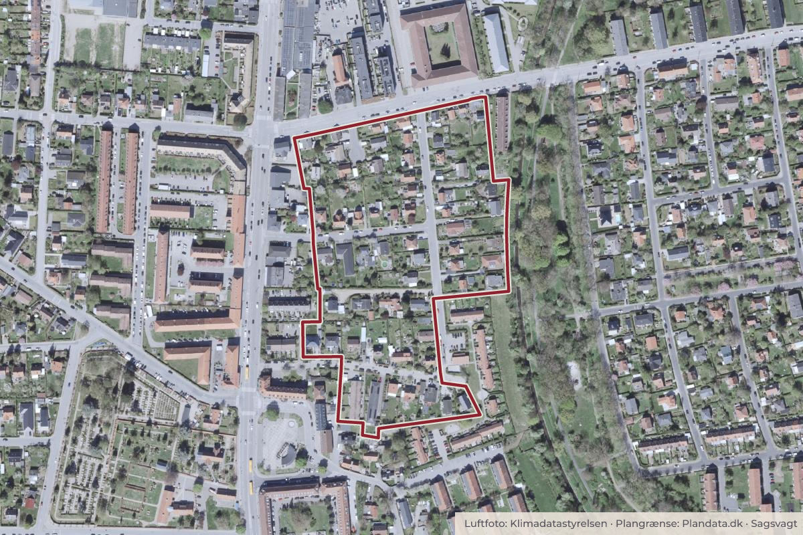

Besluttet 10. august, By- og Planudvalget, Hvidovre
Endelig vedtagelse af Lokalplan 158 for et boligområde ved Hvidovre Allé

Kort: © OpenStreetMap-bidragydere. Plangrænse: Plandata.dk, Hvidovre Kommune.

Kort fortalt
- Forslaget
- Godkende, at Lokalplan 158 for et boligområde ved Hvidovre Allé vedtages
- Hvem
- By- og Planudvalget, Hvidovre Kommune
- Hvornår
- Mandag 10. august 2026
- Status
- Besluttet. Ad 1. Anbefales godkendt.
Er noget forkert her? Skriv til os
Læs hele sagen Kommunens egen tekst
Indstilling
Direktøren indstiller til By- og Planudvalget at anbefale over for Kommunalbestyrelsen
1. at godkende, at Lokalplan 158 for et boligområde ved Hvidovre Allé vedtages
endeligt uden ændringer.
Sagsfremstilling
Center for Plan og Miljø har udarbejdet dette dagsordenspunkt.
Forslag til Lokalplan 158 for et boligområde ved Hvidovre Allé har været fremlagt i offentlig
høring, og kan nu vedtages endeligt (vedlagt som bilag ”Forslag til Lokalplan 158 for et
boligområde ved Hvidovre Allé”).
Lokalplanens indhold
Lokalplan 158 er udarbejdet for at muliggøre et byggeri på Hvidovrevej 87 samt for at opdatere
plangrundlaget for det omkringliggende boligområde. Planen indfører blandt andet krav om
grønne hegn mod vej, stiller krav til klimatilpasning, udpeger tre bevaringsværdige huse og
indfører en differentieret bebyggelsesprocent alt efter om huset opføres i 1 etage eller 1 etage
med udnyttet tagetage.
Modtagne høringssvar
I løbet af høringsperioden er der kommet to høringssvar. Disse høringssvar er samlet i et
dokument, hvor de kan læses i deres helhed (vedlagt som bilag ”Samlede høringssvar til
forslag til Lokalplan 158 for et boligområde ved Hvidovre Allé”).
Høringssvarene omhandler henholdsvis etageantallet på ny bebyggelse på Hvidovrevej 87 og
forbuddet mod tagterrasser, og de er begge behandlet i en hvidbog (vedlagt som bilag
”Hvidbog over høringssvar til forslag til Lokalplan 158 for et boligområde ved Hvidovre Allé”). I
hvidbogen er der gengivet resuméer af høringssvarene, hvorefter administrationen har
kommenteret dem.
Høringssvarene giver ikke anledning til, at administrationen anbefaler ændringer i lokalplanen.
Politiske beslutninger og aftaler
Lokalplanen blev igangsat af By- og Planudvalget den 1. september 2025, punkt 7.
Kommunalbestyrelsen godkendte den 25. marts 2026, punkt 3, at sende forslag til Lokalplan
158 for et boligområde ved Hvidovre Allé i offentlig høring i mindst fire uger, at afholde et
borgermøde om lokalplanen, samt at der ikke skal gennemføres en miljøvurdering af planen.
Økonomiske konsekvenser
Der er ingen økonomiske konsekvenser for Hvidovre Kommune.
Retsgrundlag
Lokalplaner udarbejdes efter planlovens §§ 13-16, jf. lovbekendtgørelse nr. 572 af 29. maj
2024. Offentliggørelse og vedtagelse af planer sker efter samme lovs §§ 24-27.
En lokalplan skal tilvejebringes, før der gennemføres større udstykninger eller større byggeeller anlægsarbejder, herunder nedrivninger af bebyggelse, og i øvrigt når det er nødvendigt for
at sikre kommuneplanens virkeliggørelse, jf. planlovens § 13, stk. 2.
Hvis en udstykning eller et byggearbejde mv. som nævnt i § 13, stk. 2 er i overensstemmelse
med kommuneplanen, påhviler det kommunalbestyrelsen snarest at udarbejde forslag til
lokalplan og derefter fremme sagen mest muligt. Kommunalbestyrelsen kan i sådanne tilfælde
forlange, at udstykkeren eller bygherren yder kommunen bistand til planens udarbejdelse.
Dette er fastlagt i planlovens § 13, stk. 3.
Høring
Forslag til Lokalplan 158 har været fremlagt i offentlig høring i perioden fra den 27. marts til den
17. maj 2026. I løbet af høringsperioden er der kommet to høringssvar.
Den 11. maj 2026 blev der afholdt et borgermøde om lokalplansforslagets indhold.
Klima-, miljø- og bæredygtighedsmæssige konsekvenser
Der er ikke umiddelbart klima-, miljø- eller bæredygtighedsmæssige konsekvenser i denne sag.
Beslutning
Ad 1. Anbefales godkendt.
Kilde: Hvidovre Kommune, By- og Planudvalget, referat fra mødet mandag 10. august 2026, punkt 7. Læs den originale sag hos kommunen.